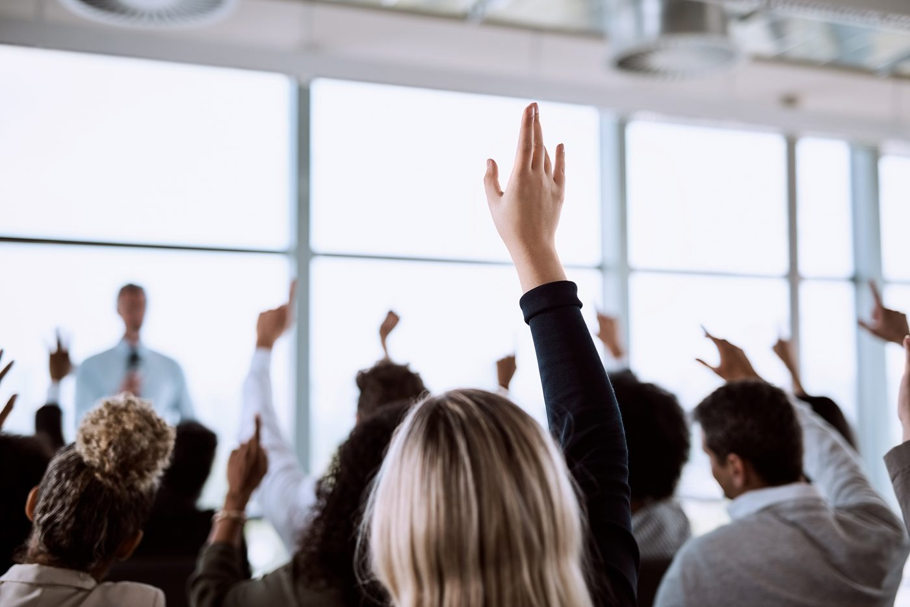
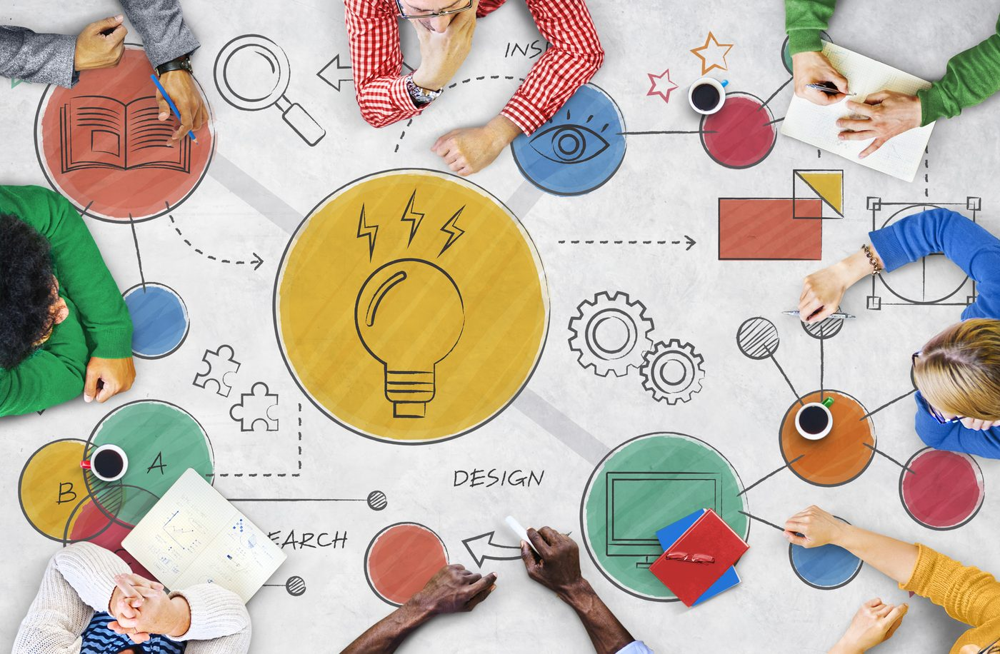
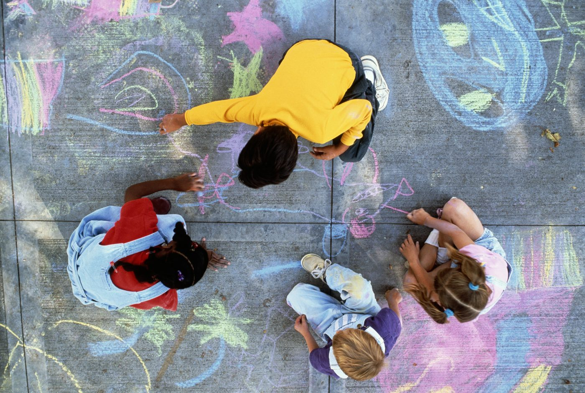
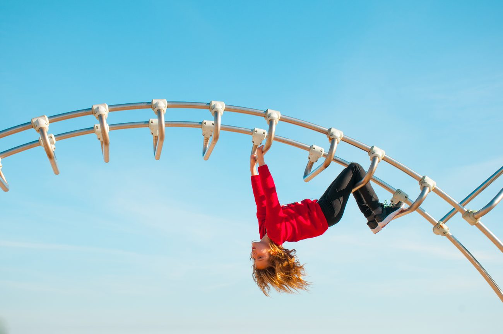
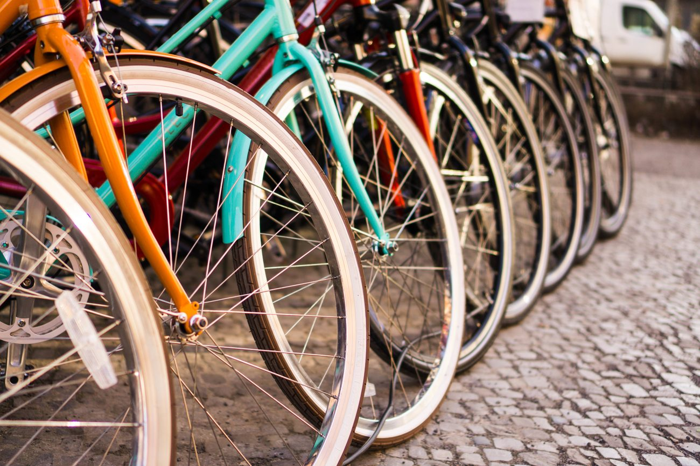
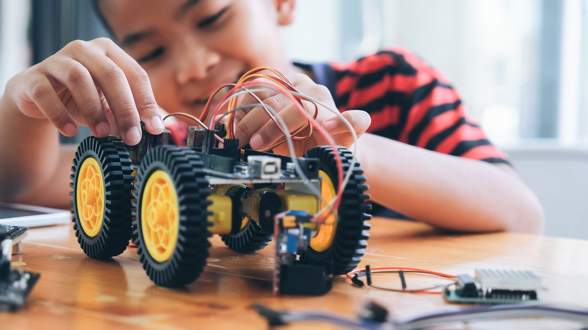

Kumppanuus
Kodin, koulun ja oppilaiden yhteistyö muodostaa toimintamallin perustan. Arkiaktiivisuutta tuetaan yhteisten tavoitteiden ja toimintaperiaatteiden avulla.
Kodin ja koulun yhteinen toimintamalli
Lisää liikettä lasten arkeen – pienillä teoilla.
Kodin ja koulun yhteinen toimintamalli, jonka tavoitteena on edistää lasten arkiaktiivisuutta koulun ja kodin arjessa.
Lukuvuoden teema: Pienillä teoilla lisää liikettä
Periaatteet
Toimintamallin tarkoituksena on tukea lasten päivittäistä liikkumista tavallisessa arjessa – yhteisten tavoitteiden ja avoimen vuorovaikutuksen avulla.
Kodin, koulun ja oppilaiden yhteistyö muodostaa toimintamallin perustan. Arkiaktiivisuutta tuetaan yhteisten tavoitteiden ja toimintaperiaatteiden avulla.
Oppilaat osallistuvat toiminnan suunnitteluun, toteutukseen ja kehittämiseen. Myös huoltajat ja henkilöstö pääsevät vaikuttamaan sisältöihin.
Painopiste on lasten päivittäisessä liikkumisessa: koulumatkoilla, välitunneilla, yhteisillä haasteilla ja kodin pienillä arjen teoilla.
Toiminta rakentuu helposti toteutettavista ratkaisuista, jotka eivät vaadi lisäresursseja. Valmiit materiaalit ja vuosikello tukevat käyttöönottoa.
Toimintaa arvioidaan ja kehitetään vuosittain oppilailta, huoltajilta ja henkilöstöltä kerätyn palautteen perusteella.
Toimintamallin vaiheet
Toiminta etenee selkeänä kiertona: ensin luodaan yhteinen ymmärrys, sitten osallistetaan oppilaat, mahdollistetaan liikkuminen vuosikellon avulla ja lopuksi kehitetään toimintaa palautteen pohjalta.
Valitse vaihe ympyrästä – pääset suoraan sen kuvaukseen.

Luodaan yhteinen ymmärrys kodin, koulun ja oppilaiden välille lasten arkiaktiivisuuden merkityksestä ja yhteisistä toimintaperiaatteista.
Lukuvuoden lupaus

Lisätään oppilaiden osallisuutta ja vaikutusmahdollisuuksia arkiaktiivisuuden suunnittelussa sekä hyödynnetään heidän näkemyksiään toiminnan kehittämisessä.

Mahdollistetaan lasten arkiaktiivisuus helposti toteutettavien, yhteisöllisten ja osallistavien toimintojen avulla koulun arjessa.
YHDESSÄ-vuosikello
Neljä kokonaisuutta, jotka rytmittävät lukuvuoden – syksystä kevääseen.
Käynnistetään lukuvuosi yhteisesti ja vahvistetaan kodin ja koulun kumppanuutta.
Lisätään lasten motivaatiota liikkua ja vahvistetaan yhteisöllisyyttä. Haaste kestää neljä viikkoa.

Vahvistetaan lasten osallisuutta ja mahdollisuutta vaikuttaa koulun liikunnalliseen toimintaan.

Vahvistetaan aktiivisia koulumatkoja osana päivittäistä elämäntapaa. Haaste kestää neljä viikkoa.

Arvioidaan toiminnan toteutumista, hyödynnetään osallistujien kokemuksia ja kehitetään toimintaa palautteen perusteella seuraavaa lukuvuotta varten.
Materiaalipankki
Materiaalit avautuvat uuteen välilehteen.
Inspiroidu ja kokeile
UKK-instituutti
Käytännön vinkkejä siihen, miten lisätä liikettä tavalliseen arkeen.
Tutustu sivustoon →Neuvokas perhe
Helppoja leikkejä, videoita ja vinkkejä koko perheen yhteiseen liikkumiseen.
Tutustu sivustoon →Liikkuva koulu
Vinkkejä aktiivisiin välitunteihin, toiminnalliseen opetukseen ja koulumatkoihin.
Tutustu sivustoon →Käyttöönotto
Lähetä aloitusviesti huoltajille
Järjestä yhteinen suunnitteluilta
Toteuta ideointituokiot ja ideaseinä
Käynnistä vuosikellon mukaiset toiminnot
Kerää palaute ja kehitä toimintaa
Pienillä teoilla – yhdessä – rakennetaan lapsille aktiivisempi arki.
Tausta
Toimintamalli on kehitetty opinnäytetyön tuotoksena. Malli perustuu kyselyihin, osallistavaan työpajaan ja tutkimustietoon lasten fyysisestä aktiivisuudesta, osallisuudesta sekä kodin ja koulun yhteistyöstä.